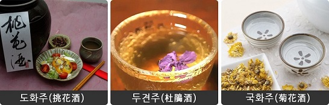
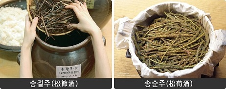

- 술술 소개
- 우리 술 종류



도수:10도 이상
꽃술: 생화를 술밥과 함께 넣고 발효시켜 만드는 방법과 말린 꽃잎을 술에 닿지 않도록
술독 안에 매달아 향만 베게 하는 방법으로 만든다. 향긋한 봄날의 꽃내음이 감돈다.
소나무 술: 송절주는 멥쌀로 빚은 술에 소나무 가지를 달인 물로 덧술을 담궈 만든 술이다.
송순주는 봄에 자란 소나무 순을 뜨거운 물에 살짝 데쳐 찌꺼기 술에 버무린 고두밥과
한층씩 번갈아 술독에 담아 만든다.
이 외에도 홍삼이나 꿀, 약재 등을 넣은 술이 있고 말벌, 지네, 뱀을 넣은 술도 있다.